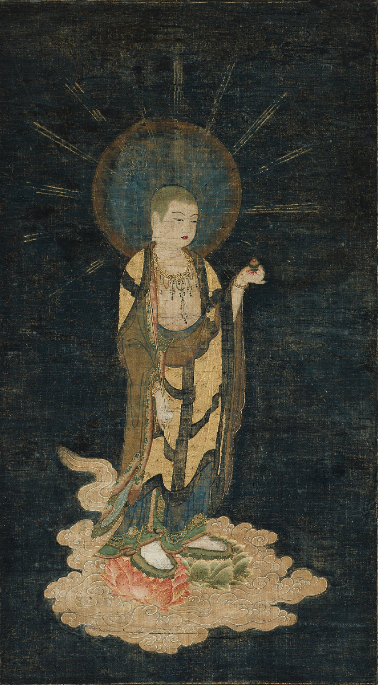

Right now, as I am writing this piece and you are reading it, my Mother is dying. Present-tense. I began this piece in June, and have waited this long to publish it.There is no avoiding it any longer, although I believe part of me very much and quite reasonably wants to.
On Memorial Day weekend, my mother choked on hot-dog, and her heart stopped. My father could not resuscitate her and she slipped into a coma. I didn’t know about the incident until the next day when my brother called me. Of course, I nearly lost my shit. We knew that she was suffering from dementia or something akin to it — hence the swallowing issues. When she came out of the coma, she received another diagnosis — stomach cancer. I was in bed, worn out for about three days. My brother would call and tell me what was going on. When she renamed one of the orderlies who looked after her, “Leonardo,” I was reading Walter Isaacson’s new biography of Leonardo Da Vinci.
What do these synchronicities mean, if anything? Is it because as scientists have discovered there is a little bit of me left in my Mum? I suppose I could choose to ignore these odd things, and say that these are just mere coincidences — but they are not. These connections have meaning.
Tibetan Buddhist yogis tells us that at the time of death, a door to knowledge is opened to another world — sometimes a temporary one before rebirth called a bardo. Our ability to correctly navigate these spaces is based on our familiarity with the deep recesses of the primordial mind — most especially, how we experience pain. From a calm base, connections and new karma can arise, lessons can be absorbed, the voice can be heard. If a being experiences a good, conscious death, they everyone around them is affected by it.
I began to meditate on pain and on death in June for obvious reasons. Over the past year, I have also been finishing an elaborate tattoo. I have plenty of time to think about pain. I have had the somewhat odd desire to have a Japanese “body-suit” for twenty years and have been completing it ever since. Not coincidentally, the main subject of my back piece is the Bodhisattva Kstisgharba, the protector of children, women, and guide to the deceased between lives.
I rarely talk about, never mind openly display my tattoos, but recently, a brave soul passing by me while I was working out asked, “Why would you do all that to your body?” It’s a legitimate question and one I’d been turning over in my mind ever since I started. I don’t know why anyone else is doing this, that’s none of my business. Let me dismiss a myth. Tattooing a significant portion of your human body takes too much effort, time, and money for it to be reduced to “Oh, this looks badass.”
So why AM I doing this to my body? Buddhism teaches us that we shape our minds through our choices. No one is up there or out there is influencing us. Everything is a choice, either subconscious or conscious.
Everything is mind, since the physical brain is the font of the mind, everything, too, is the body.
The process of Japanese tattooing is long and often extraordinarily painful. Of course, it is also entirely deliberate, and self-inflicted. I choose.
I choose this pain because I believe that what I can endure gracefully and consciously creates the unique sense of reality we experience; nothing is left out, and everything is valuable. To me at least this is a skillful reorientation to my relationship to trauma, pain, and death. A calibration of the soul that in no small way — prepares me to enter into the 2nd act of my life as I approach fifty. What once I felt I had no power over is now being contemplated each second — every tinge of pain, every prick of the needle, every drop of blood, each hour of healing. Time on the tattoo table really isn’t any different than time on the zafu. I’m dealing with my body and my brain as I pass through a tiny Bardo of people chattering, needles whirring, loud music, and of course my skin being inserted with ink. We can and do choose pain…the real question is first, what is the real pain — and second, do we wish to experience pain in a way that creates beauty and power or do we let pain overwhelm us?
When I sit down on my meditation cushion, I zoom in on what hurts — what feels like crap. I follow the breath and ask — what is this?
When my Mother was given six months to live, I knew that the entire process was going to deepen everything — and it has.
She has progressive super-nuclear palsy, a degenerative disorder affecting the brain, and stomach cancer. The found the latter because of the former causes problems in swallowing, speech and aspiration. She will most certainly leave this life in the next few months. There is nothing special about her illness, except that it is my Mother, and it will be her last.
My family is made up of three older siblings and my Dad. We are all, naturally, in shock, often contentious, and not doing so well. Inevitably everything that was dysfunctional to begin with, is now even more so — that includes my own behavior. I have not handled certain moments well. I blew up my ex’s phone thinking she could help me — when I knew from experience that this was definitely not a good idea.
Lesson: Expect that absolute utter worst during a time of death. It is not “pretty” or sterilized or gentle.
A parent’s demise is a powerful doorway opening to huge lessons. The most important amongst them is forgiveness. As a family, we have long been estranged from one another. I am not sure we will grow any closer now — but I would like to think we can create some peace. Unfortunately, that is not unfolding.
My mother is eighty, she is frail, hungry, cannot swallow or speak terribly well and just got over pneumonia. We did not think she should have radiation treatments for fear of them making her condition worse — and of course, she decided she wants them because she’d have to get better to die.When I told my therapist — who is fortunately a fellow practitioner, about my mother, he sighed and said, “Well, sounds like you are entering into another period of mourning.” Oh joy, I thought.
The temple bell stops — but the sound keeps coming out of the flowers. The contrail dissipates — but the sound keeps coming out of the sky. -Matsuo Basho
I broke up with my partner after four years of a frustrating and tumultuous relationship in January, and here we are in October, and my Mother is dying. My ex, though she is unlikely ever to admit it, is allergic to the very notion of taking care of the “other.” She believes in utter, complete and sometimes blisteringly harsh emotional autonomy. So as if often the case in the sort of dynamic that arises from dating someone who is, (ahem) “empowered” in this unique way, is that the other morphs into the anxious, codependent set-prop and audience member that they likely were in their family dynamic — and then things generally go to shit. When we did speak, I didn’t have any more energy to listen to her blather on and on about how well she was day-trading and she made it abundantly clear that she was not going to show up for this period of grieving even as a friend. Further, she reminded me, I ought not to have any “bullshit expectations” to begin with. That’s legitimate, at least I know her boundaries, right?
Lesson: Accept, do not blame those who do not have the inclination, time, consideration or empathy to deal with you. There is nothing wrong with them — there is something wrong with you for trying to extract blood from a rock.
My first goal, of course, is to remain in my body and avoid drinking myself into the gutter, my second goal is, of course, to understand. Slowing down to mourn the loss of another human being, never mind one’s own Mother is about as antithetical to the bloody rush of modern “reality” as possible. And that is where I’d like to be — vested in a true hope for my Mother that she has the right exit — and that is all I wish. My concern for me is that I remain present for the experience.
| Тег | Кількість |
|---|---|
| p | 21 |
| img | 1 |
| i | 4 |
| b | 4 |
| h1 | 1 |
| button | 5 |
| textarea | 1 |
| input | 2 |
| table | 1 |
| tr | 13 |
| th | 2 |
| td | 22 |